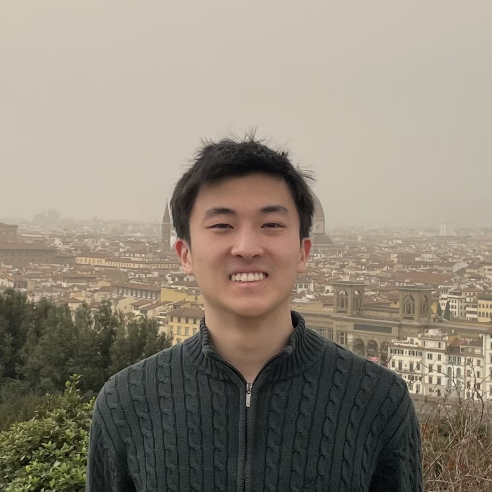

About

Hi, my name is Alan Chen, a sophomore studying at Brown University. I am pursuing an ScM in Applied Math and a BSc in Computer Science.
I'm currently working as a research assistant in the field of sequential data analysis under the supervision of Dr. Kavita Ramanan. My interests lie in probability theory, statistical learning theory, generative modeling, and algorithms and theoretical computer science.
I want to share my work, projects, thoughts, knowledge, and concerns with the world. Above all, I want to change the world for the benefit of others.
Some random facts about me:
- My favorite activites include swimming, coding, reading, music, poker, and occasionally some anime or video games.
- Winter is my favorite season. Related: my dream vacation would be to Iceland/Alaska.
- I'm currently on a journey to learn vim.
I hope you enjoy your stay.
Cheers! - Alan